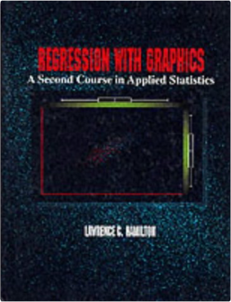

Princess BrideWilliam Goldman  Beautiful, flaxen-haired Buttercup has fallen for Westley, the farm boy, and when he departs to make his fortune, she vows never to love another. So when she hears that his ship has been captured by the Dread Pirate Roberts - who never leaves survivors - her heart is broken. But her charms draw the attention of the relentless Prince Humperdinck who wants a wife and will go to any lengths to have Buttercup. So starts a fairytale like no other, of fencing, fighting, torture, poison, true love, hate, revenge, giants, hunters, bad men, good men, beautifulest ladies, snakes, spiders, beasts, chases, escapes, lies, truths, passion and miracles. Sensation and PerceptionE. Bruce Goldstein Helping you understand how you perceive what's around you-the wonder of seeing a face, hearing music, and smelling a rose-is what Goldstein's SENSATION AND PERCEPTION is all about. Writing clearly and using vivid full-color illustrations to clarify concepts, Goldstein shows you the importance of perception to your life. This textbook includes the latest breakthroughs in research and offers chapter-by-chapter correlation with online and multimedia resources that help you make the most of your study time. "Test Yourself" questions and "Think About It" exercises help you review and retain the material. The accompanying, "Virtual Lab" media exercises (available both on CD-ROM and online through the CengageNOW student tutorial platform) offer many animations and examples that clarify difficult concepts. The Curious Incident of the Dog in the Night-TimeMark Haddon Christopher is 15 and lives in Swindon with his father. He has Asperger's Syndrome, a form of autism. He is obsessed with maths, science and Sherlock Holmes but finds it hard to understand other people. When he discovers a dead dog on a neighbour's lawn he decides to solve the mystery and write a detective thriller about it. As in all good detective stories, however, the more he unearths, the deeper the mystery gets - for both Christopher and the rest of his family. Fundamentals of Physics, Part 1David Halliday, Robert Resnick, Jearl Walker Finally, an interactive website based on activities you do every day! The new Halliday/Resnick/Walker 7e eGrade Plus program provides the value-added support that instructors and students want and need. Powered by Wiley's EduGen system, this site includes a vast array of high-quality content including: Homework Management: An Assignment tool allows instructors to create student homework and quizzes, using dynamic versions of end-of-chapter problems from Fundamentals of Physics or their own dynamic questions. Instructors may also assign readings, activities, and other work for students to complete. A Gradebook automatically grades and records student assignments. This not only saves time, but also provides students with immediate feedback on their work. Each student can view his or her results from past assignments at any time. An Administration tool allows instructors to manage their class rosters on-line. A Prepare and Present tool contains a variety of the Wiley-provided resources (including all the book illustrations, Java applets, and digitized video) to help make preparation time more efficient. This content may easily be adapted, customized, and supplemented by instructors to meet the needs of each course. Self-Assessment. A Study and Practice area links directly to the multimedia version of Fundamental of Physics, allowing students to review the text while they study and complete homework assignments. In addition to the complete on-line text, students can also access the Student Solutions Manual, the Student Study Guide, interactive simulations, and the Interactive LearningWare Program. Interactive LearningWare. Interactive LearningWare leads the student step-by-step through solutions to 200 of the end-of-chapter problems from the text. And there's lots more! You'll need to see it to believe it. Check out the Halliday/Resnick/Walker site at: www wiley.com/college/halliday Fundamentals of Physics, Part 3David Halliday, Robert Resnick, Jearl Walker Create your own teaching and learning environment using eGrade Plus with EduGen. Finally, an interactive website based on activities you do every day! The new Halliday/Resnick/Walker 7/e eGrade Plus program provides the value added support that instructors and students want and need. Powered by Wiley's EduGen system, this site includes a vast array of high quality content including: Homework Management. An Assignment tool allows instructors to create student homework and quizzes, using dynamic versions of end of chapter problems from Fundamentals of Physics or their own dynamic questions. Instructors may also assign readings, activities, and other work for students to complete. A Gradebook automatically grades and records student assignments. This not only saves time, but also provides students with immediate feedback on their work. Each student can view his or her results from past assignments at any time. An Administration tool allows instructors to manage their class rosters on line. A Prepare and Present tool contains a variety of the "Wiley" provided resources (including all the book illustrations, java applets, and digitized video) to help make preparation time more efficient. This content may easily be adapted, customized, and supplemented by instructors to meet the needs of each course. A Study and practice area links directly to the multimedia version of "Fundamental of Physics", allowing students to review the text while they study and complete homework assignments. In addition to the complete on line text, students can also access the Student Solutions Manual, the Student Study Guide, interactive simulations, and the Interactive LearningWare Program. Interactive LearningWare leads the student step by step through solutions to 200 of the end of chapter problems from the text. And there's lots more! You'll need to see it to believe it. Check out the Halliday/Resnick/Walker site. Fundamentals of Physics, Part 4David Halliday, Robert Resnick, Jearl Walker Finally, an interactive website based on activities you do every day! The new Halliday/Resnick/Walker 7/e eGrade Plus program provides the value—added support that instructors and students want and need. Powered by Wiley's EduGen system, this site includes a vase array of high—quality content including: Homework Management: An Assignment tool allows instructors to create student homework and quizzes, using dynamic versions of end—of—chapter problems from Fundamentals of Physics or their own dynamic questions. Instructors may also assign readings, activities, and other work for students to complete. A Gradebook automatically grades and records student assignments. This not only saves time, but also provides students with immediate feedback on their work. Each student can view his or her results from past assignments at any time. An Administration tool allows instructors to manage their class rosters on—line. A Prepare and Present tool contains a variety of the Wiley—provided resources (including all the book illustrations, java applets, and digitized video) to help make preparation time more efficient. This content may easily be adapted, customized, and supplemented by instructors to meet the needs of each course. Self—Assessment. A Study and Practice area links directly to the multimedia version of Fundamentals of Physics, allowing students to review the text while they study and complete homework assignments. In addition to the complete on—line text, students can also access the Student Solutions Manual, the Student Study Guide, interactive simulations, and the Interactive LearningWare Program. Interactive LearningWare. Interactive LearningWarew leads the student step—by—step through solutions to 200 of the end—of—chapter problems from the text. And there's lots more! You'll need to see it to believe it. Check out the Halliday/Resnick/Walker site at: www wiley.com/college/halliday Fundamentals of Physics, Part 5David Halliday, Robert Resnick, Jearl Walker Finally, an interactive website based on activities you do every day! The new Halliday/Resnick/Walker 7e eGrade Plus program provides the value added support that instructors and students want and need. Powered by Wiley's EduGen system, this site includes a vast array of high quality content including: Homework Management: an assignment tool allows instructors to create student homework and quizzes, using dynamic versions of end of chapter problems from Fundamentals of Physics or their own dynamic questions; instructors may also assign readings, activities, and other work for students to complete; and a gradebook automatically grades and records student assignments. This not only saves time, but also provides students with immediate feedback on their work. Each student can view his or her results from past assignments at any time. An Administration tool allows instructors to manage their class rosters on line. A Prepare and Present tool contains a variety of the Wiley provided resources (including all the book illustrations, Java applets, and digitized video) to help make preparation time more efficient. This content may easily be adapted, customized, and supplemented by instructors to meet the needs of each course. Self Assessment: A Study and Practice area links directly to the multimedia version of "Fundamental of Physics", allowing students to review the text while they study and complete homework assignments. In addition to the complete on line text, students can also access the Student Solutions Manual, the Student Study Guide, interactive simulations, and the Interactive LearningWare Program. The Interactive LearningWare leads the student step by step through solutions to 200 of the end of chapter problems from the text. And there's lots more! You'll need to see it to believe it. Ultimate Mixer CookbookKay Halsey With The Ultimate Mixer Cookbook and a stand mixer you can plan on spending less time in the kitchen, but still get fabulous results. With over 150 delicious international recipes you will have a wonderful array of dishes to prepare. - Over 150 recipes for soups, salads, pasta dishes, lunches and suppers, vegetable dishes, breads, desserts, cakes and cookies - Covers the use of mixer accessories and attachments: from the flat beater, wire whip and dough hook to the food grinder, rotary slicer/shredder, pasta maker, fruit and vegetable strainer, sausage stuffer, citrus juicer and grain mill. Regression with Graphics: A Second Course in Applied StatisticsLawrence C. Hamilton This text demonstrates how computing power has expanded the role of graphics in analyzing, exploring, and experimenting with raw data. It is primarily intended for students whose research requires more than an introductory statistics course, but who may not have an extensive background in rigorous mathematics. It's also suitable for courses with students of varying mathematical abilities. Hamilton provides students with a practical, realistic, and graphical approach to regression analysis so that they are better prepared to solve real, sometimes messy problems. For students and professors who prefer a heavier mathematical emphasis, the author has included optional sections throughout the text where the formal, mathematical development of the material is explained in greater detail. REGRESSION WITH GRAPHICS is appropriate for use with any (or no) statistical computer package. However, Hamilton used STAT A in the development of the text due to its ease of application and sophisticated graphics capabilities. (STATA is available in a student package from Duxbury including a tutorial by the same author: Hamilton, STATISTICS WITH STAT A, 5.0, 1998; ISBN: 0-534-31874-6.) |
 Made with Delicious Library
Made with Delicious LibrarySpringfield, State zipflap congrotus delicious library Doddridge, Edward